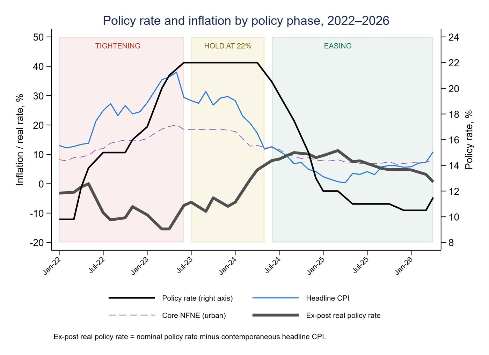

Executive summary
This study asks whether the State Bank of Pakistan’s Monetary Policy Committee maintains a coherent causal narrative of inflation across a major policy cycle. It applies a systematic codebook thematic analysis to all 36 Monetary Policy Statements issued between January 2022 and April 2026, identifying and coding causal claims about inflation and comparing the stated diagnoses with subsequent CPI dynamics.
Findings below are preliminary, presented to the Economic Advisory Group. The full brief is under review; a link will be added here once it is published.
Research question
How does the SBP Monetary Policy Committee construct and revise its causal narrative of inflation across the 2022–2026 cycle, and how coherently does that narrative connect the stated causes of inflation, the policy response, and the outcomes that followed?
Objectives
- Diagnosis - which causes of inflation are emphasized, downplayed, or omitted?
- Policy logic - which policy logic dominates, and does it shift over time?
- Empirical fit - are stated diagnoses consistent with CPI decomposition over the following six months?
- Revision - is misalignment between forecast and outcome acknowledged in later statements?
Data
The complete corpus of 36 SBP Monetary Policy Statements issued between January 2022 and April 2026, with no sampling. The period covers the major 2022–2026 inflation episode, including the initial shock, monetary tightening, disinflation, easing, and renewed inflationary pressure.
Methodology
The analysis uses codebook thematic analysis (Braun & Clarke, 2021), operationalized through the six-step procedure of Naeem, Ozuem, Howell and Ranfagni (2023), with a hybrid deductive–inductive coding strategy informed by Fereday and Muir-Cochrane (2006). Every paragraph was systematically screened using five pre-specified criteria covering inflation diagnosis, implied causal mechanisms, fiscal–monetary interaction, policy communication, and uncertainty or revision.
Evidence was coded using a researcher-designed codebook that distinguished directly supported textual claims from analytical interpretations and applied two pre-specified anchor questions consistently across the corpus.
This was an AI-assisted, researcher-designed, human-verified workflow: the coding protocol was designed by the researcher, AI tools supported the extraction stage, and outputs were manually reviewed and independently cross-checked before inclusion in the evidence register.
Main results (preliminary)
Across the full corpus, only one meeting (May 2022) names demand as the primary cause of inflation; the remaining 31 attribute it chiefly to supply-side, fiscal, or external factors. The policy rate itself is rarely named as a cause when inflation falls: fiscal consolidation, agricultural supply, base effects, and global commodity prices are cited far more often as reasons for disinflation than the rate itself.
The Committee’s dominant public justification for the same policy instrument changes across the cycle: inflation control and demand moderation during the 2022–23 tightening phase, giving way to growth support as the primary justification for rate cuts from 2024 onward. The analysis finds this shift without an explicit statement in the corpus identifying it.
Selected evidence


Contribution
- Treats central bank communication itself as testable evidence, rather than assuming stated reasoning is either correct or irrelevant to policy evaluation.
- Uses a researcher-designed, documented coding pipeline with manual review and an independent verification pass.
- Finds a shift in the dominant public justification attached to the same policy instrument across the cycle, without an explicit statement in the corpus identifying that shift.
Current status
Findings are preliminary and were presented to the Economic Advisory Group. The full document is currently under review; a link will be added once the final version is published.
← Back to research